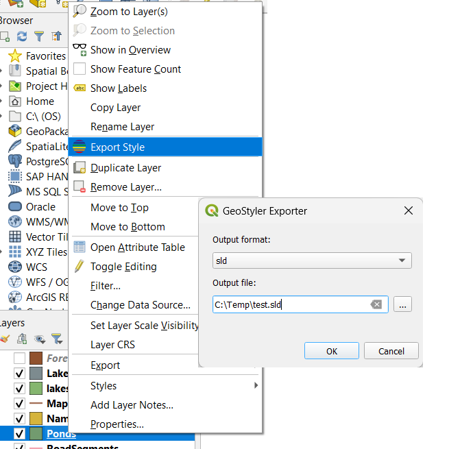

GeoStyler - ArcGIS Unterstützung und weitere neue Features
Jan Suleiman, terrestris GmbH & Co. KG
Benjamin Gerber, Camptocamp
FOSSGIS 2025, Münster
Was ist GeoStyler?
ArcGIS Unterstützung
ArcGIS Unterstützung
Repository:
geostyler/geostyler-lyrx-parser
Basiert auf
GeoCat/bridge-style
Features
Polygonen
Linien
Punkten
Labels
Marks
Schraffuren
...
Limitierungen
.lyrx only
read only
Dank geht an Benjamin, Wolfgang, Myriam, Thomas, Eva, Balz!
Weitere Neuheiten
QGIS Plugin
Repository:
geostyler/geostyler-qgis-plugin
Generelle Verbesserungen
Bessere UI, bessere Expressions, bessere Parser
Eigener Server (WIP)
Mehr Demos, mehr Dienste, mehr GeoStyler

GeoStyler Code Sprint 2025
It's all about the style
Wann? 02. - 06.06.2025
Wo? Bussigny, Schweiz
Weitere Infos auf
geostyler.org
Noch Fragen?
Kommt gerne zu uns an den terrestris Stand!
Ansonsten schreibt uns auf
Github:
geostyler/geostyler
Discord:
discord.gg/yrXHDpcFcB